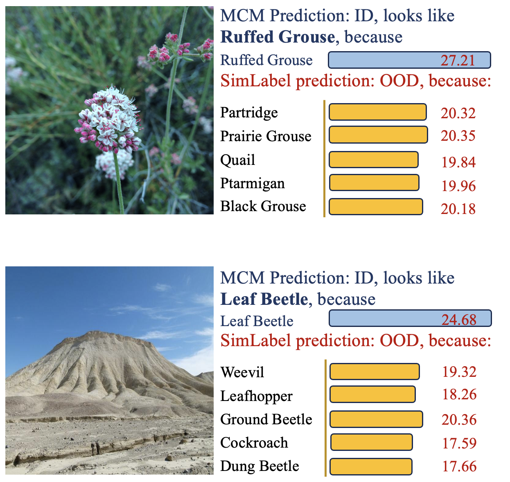
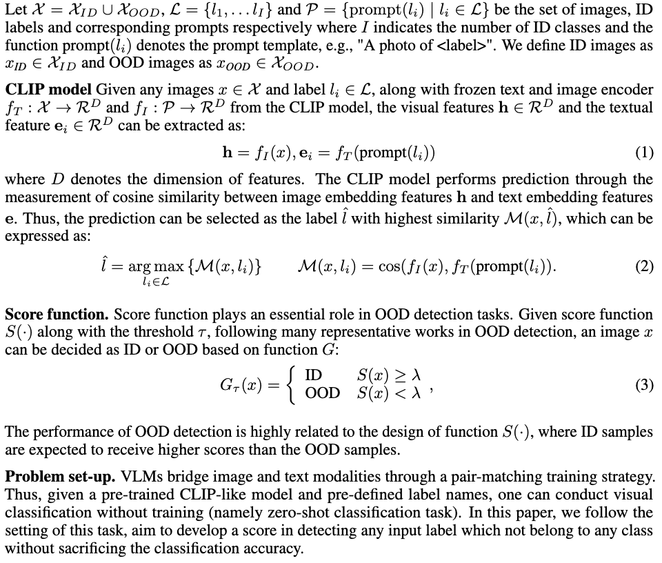
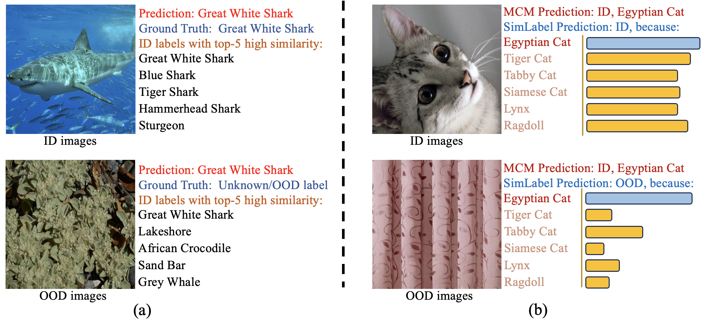
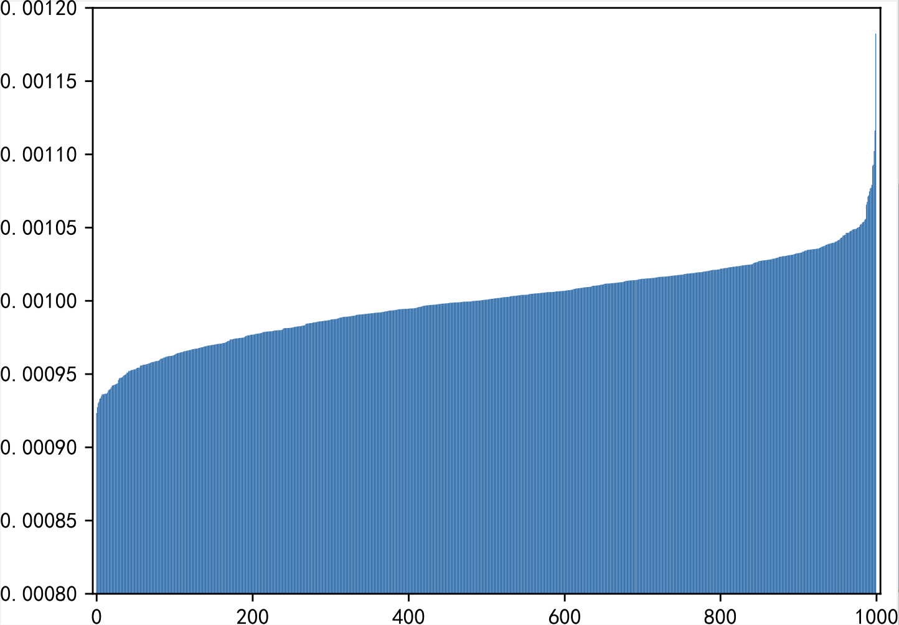
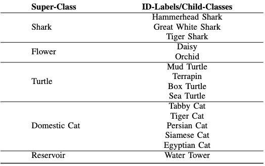
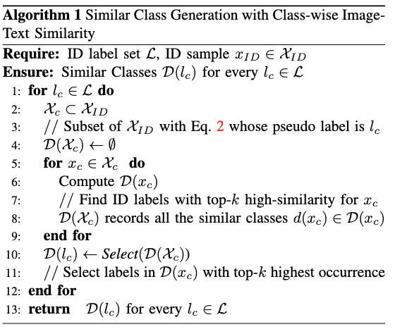
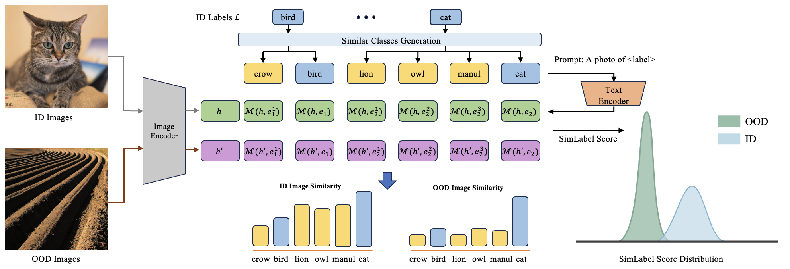
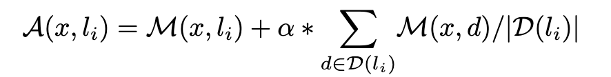
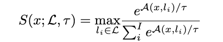

| Sections |
|---|
| Project Link |
| Demonstartion of how SimLabel Correct MCM |
| Preliminary |
| Motivation |
| Similar Class Generation |
| Overview of Pipeline |
| Score Design |
| Experiment Details |
| Reference |
Demostration of how SimLabel Correct Prediction
We presents this figure demostrating two practical examples illustrating how our proposed SimLabel score improves OOD detection compared to the MCM baseline. In these examples, SimLabel successfully identifies the OOD images by leveraging their poor consistency with the similar classes:
Preliminary
Motivation
This study is motivated by the identification of a critical yet often overlooked issue: the ID image-text similarity score serves as an useful indicator in explainingthe intrinsic connections among different classes. We firstly show a simple while intuitive example for how using consistency demostrating the motivation:
Given ID (top) and OOD (bottom) images which are predicted as the same class by the baseline method, ID images show consistent higher similarity to the set of semantically similar ID classes than OOD images.
In order to dig the existence of similar classes, we also design a straightforward experiment to explore the existence of similar classes. Given a batch of images from ID dataset where their ground-truth are all the same, we calculate the average similarity between the images and each text label.The sorted similarity distribution is visualized as following:
where they generally exhibit high similarity to a small subset of ID labels, including but not limited to the ground truth label.This finding underscores the presence of similar classes, highlighting inherent connections among ID labels.
Similar Classes Generation
- Generation with Class-Hierarchy 
- Generation with LLMs (GPT-4)
- Generation with image-text alignment 
Overview pipeline of SimLabel
Score Design
Given a image and corresponding ID similar classes, we can obtain the affinity with
where the "||" represents the cardinality of similar classes and the alpha represents the hyper-parameter that determines the weight of image&similar-classes-label similarity.Motivated by the assumption in[2] that the maximum similarity of ID image-text alignment shows advantages over OOD samples, we formally define our SimLabel score with the maximum matching score as:
Experiment Details
We evaluate our method on the ImageNet-1k OOD benchmark and primarily compare it with the MCM method due to its promising and consistent performance in the zero-shot OOD detection task. The ImageNet-1k OOD benchmark is a widely used performance validation method that uses the large-scale visual dataset ImageNet-1k as ID data and iNaturalist, SUN, Places, and Texture as OOD data, covering a diverse range of scenes and semantics. Each OOD dataset has no classes that overlap with the ID dataset.In our experiments, we adopt CLIP[1] as the target pre-trained model, which is one of the most popular and publicly available VLMs.For selecting similar classes in SimLabel-H, we follow the construction of hierarchical label sets in[3]to obtain accurate super-classes for the ImageNet labels and generate similar classes.The LLMs we prompt for SimLabel-L is GPT-4.n generating similar classes for SimLabel-L and SimLabel-I score, we select the quantity of similar classes k=6.Additionally, following the theoretical analysis and setting in[2], we set temperature tau = 1. We set the weight of image \& similar-classes-label alpha = 1. All experiments are conducted on a single NVIDIA 4090 GPU.
Reference
- Radford A, Kim J W, Hallacy C, et al. Learning transferable visual models from natural language supervision[C]//International conference on machine learning. PMLR, 2021: 8748-8763.
- Ming Y, Cai Z, Gu J, et al. Delving into out-of-distribution detection with vision-language representations[J]. Advances in neural information processing systems, 2022, 35: 35087-35102.
- Novack Z, McAuley J, Lipton Z C, et al. Chils: Zero-shot image classification with hierarchical label sets[C]//International Conference on Machine Learning. PMLR, 2023: 26342-26362.